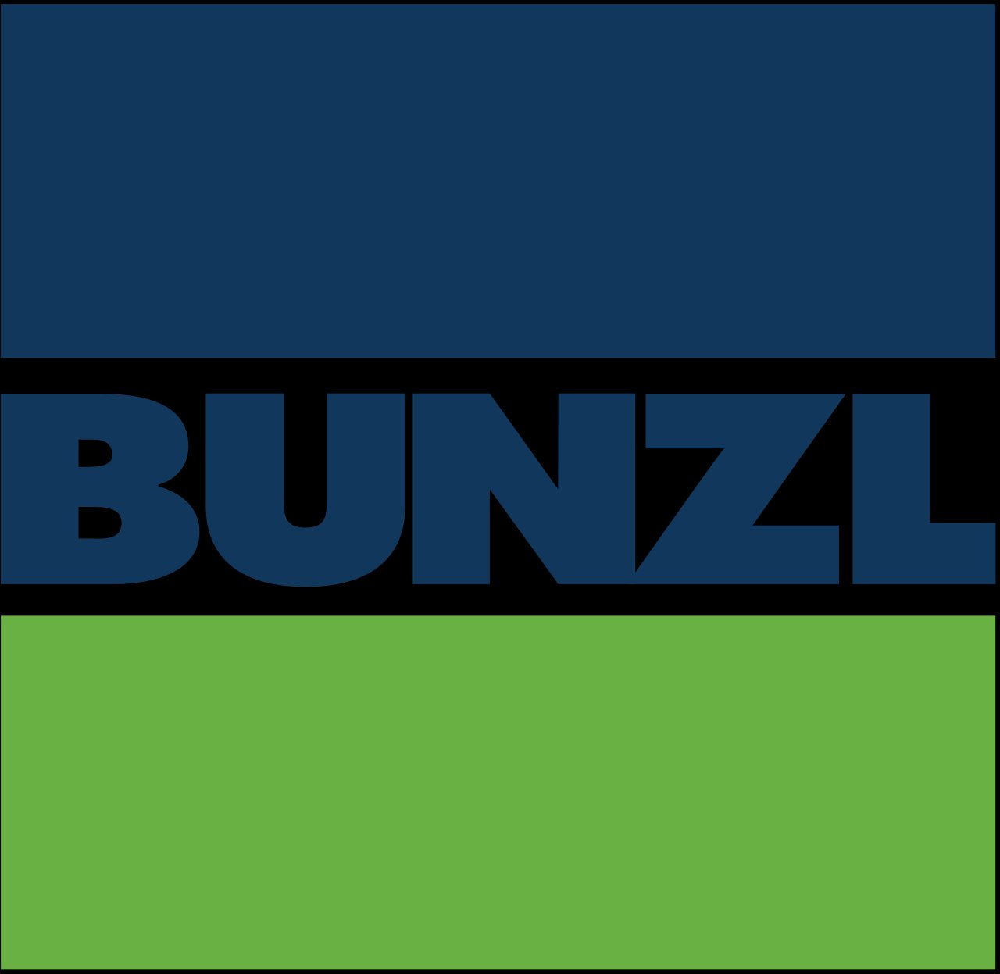

BUNZL France
440 Rte de Rosporden, 29000 Quimper
Stage de 6 semaines au sein d'un groupe international de distribution. J'ai contribué à la sécurisation et au déploiement d'environ 1000 postes informatiques répartis partout en France, via des scripts PowerShell et le RMM NinjaOne.
Migration d'antivirus & déploiement Office 365
via NinjaOne RMM, scripts PowerShell automatisés
Sécurisation des postes
désactivation des protocoles obsolètes (SSL, TLS 1.0/1.1), IIS Crypto GUI
Script Python de blocage géographique
sur le pare-feu BCE — politique de pare-feu groupe
Support utilisateur & collaboration
Microsoft Teams, dépannage, environnement international